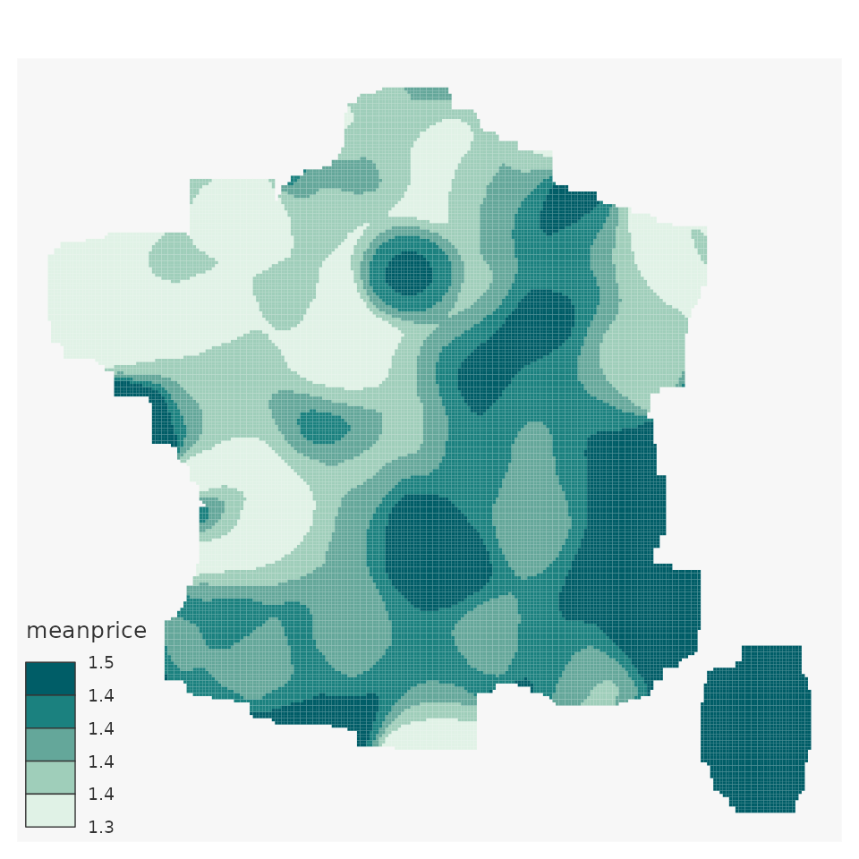
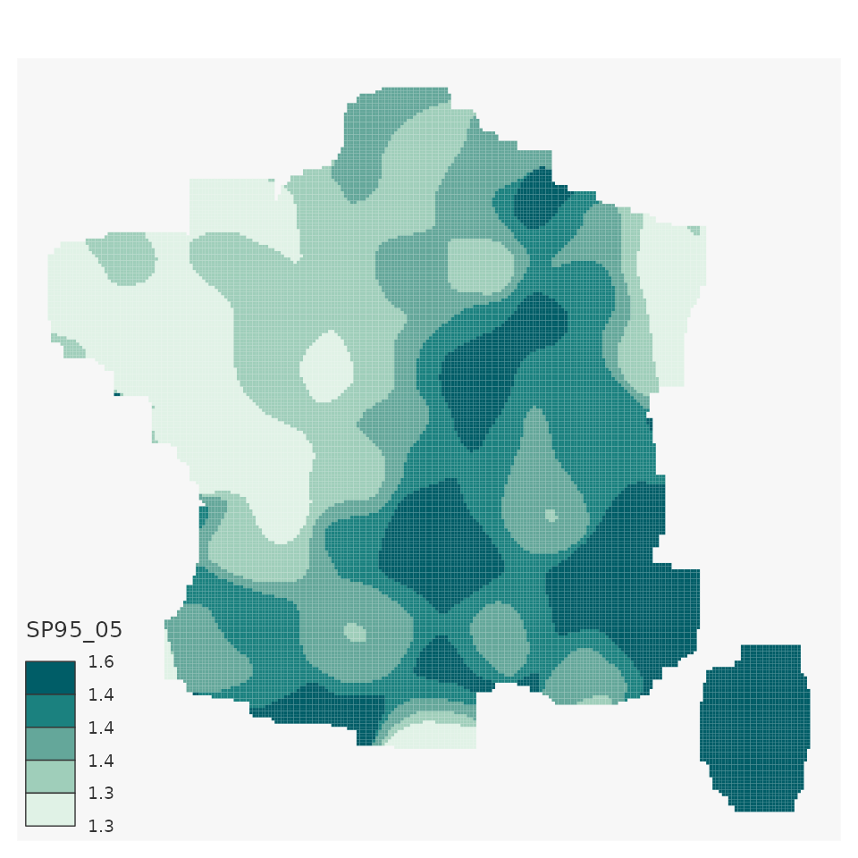
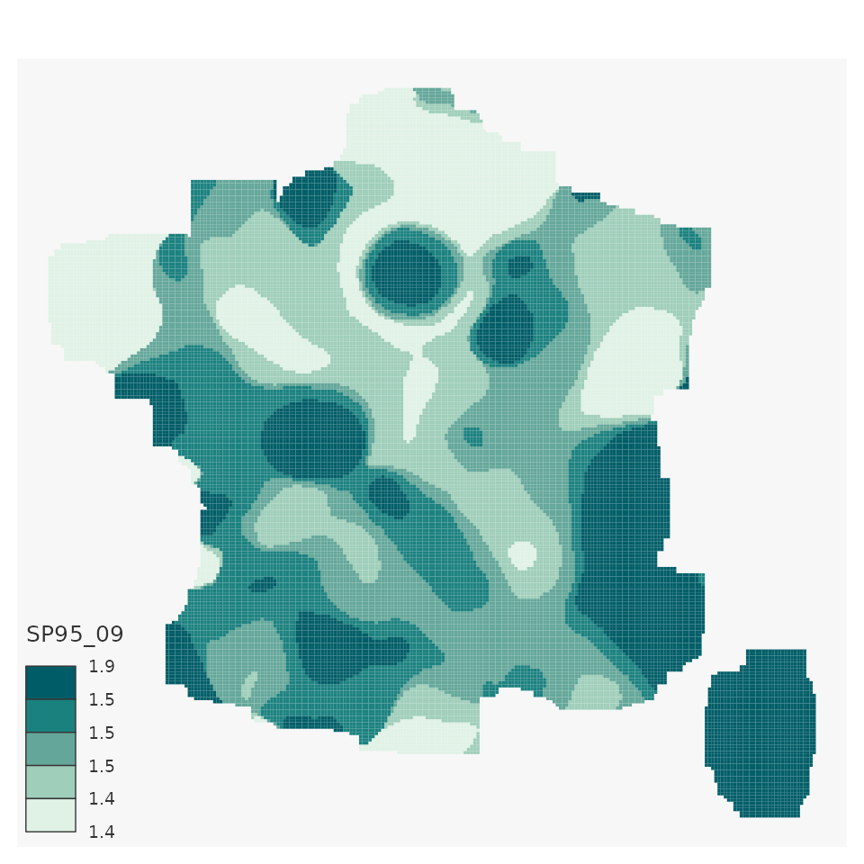
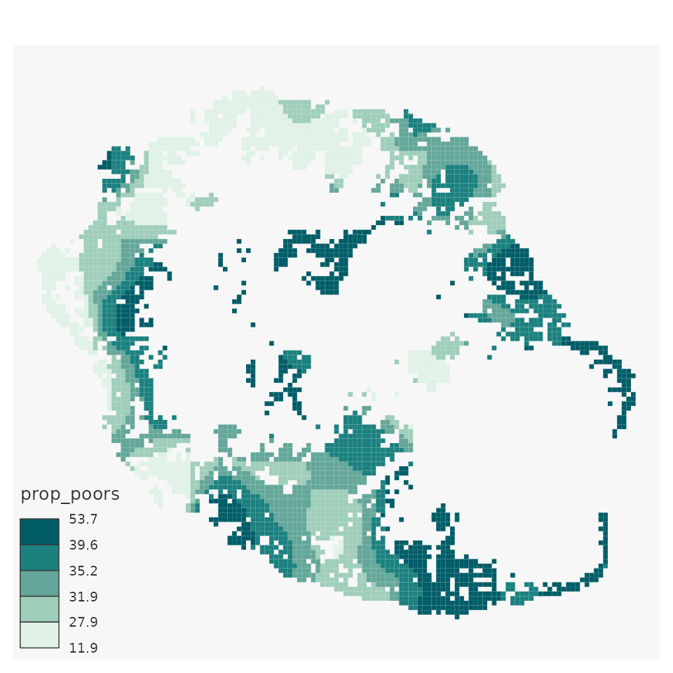

This document will show you :
- How to install
btb - How to perform spatial smoothing :
- densities
- means
- rates
- quantiles smoothing
Furthermore, it will introduce a way to map your results using
mapsf package and how to save your smoothed spatial data
using sf.
Install btb
btb is available on CRAN :
install.packages("btb")To get a bug fix or to use a feature from the development version, you can install the development version of from GitHub :
install.packages("remotes")
remotes::install_github("InseeFr/btb")Perform spatial smoothing
Warning with personal data
Spatial smoothing generally reduces individual data disclosure. However, smoothed data can contain individual information. Please remain cautious in any case.
Smoothing gas station prices
The data
btb package provides several data tables.
For every gas station in metropolitan France, the
dfPrix_SP95_2016 table gives :
- longitude / latitude coordinates (as numeric variables)
- annual mean price for unleaded gasoline in euros in 2016
library(btb)
#> Loading required package: dplyr
#>
#> Attaching package: 'dplyr'
#> The following objects are masked from 'package:stats':
#>
#> filter, lag
#> The following objects are masked from 'package:base':
#>
#> intersect, setdiff, setequal, union
#> Loading required package: mapsf
data(dfPrix_SP95_2016)
head(dfPrix_SP95_2016)
#> SP95 x y
#> 2 1.355 588356.7 6221492
#> 3 1.469 981997.3 6312078
#> 4 1.349 873384.0 6504111
#> 7 1.512 1023983.9 6351175
#> 8 1.480 377274.3 6682264
#> 9 1.403 893440.4 6690013Let’s visualize these stations :
- First, use
sfpackage to transform your data.frame as geometric points. - Then, plot them
Optional step : from points to aggregate grids
To figure out your spatial distribution before smoothing you data, it can be interesting to aggregate your points inside a grid (e.g : number of gas stations in 20 km pixels grid), because the smoothing is less time-consuming
btb provides the btb_add_centroids and the
btb_ptsToGrid functions to make it easy :
- First, associate each point with the centroid of its pixel
(
btb_add_centroids).x_centroandy_centroare created in the table.1
dfPrix_SP95_2016 <- btb_add_centroids(dfPrix_SP95_2016,
iCellSize = 20000,
names_coords = c("x","y"))
head(dfPrix_SP95_2016)
#> SP95 x y x_centro y_centro
#> 2 1.355 588356.7 6221492 590000 6230000
#> 3 1.469 981997.3 6312078 990000 6310000
#> 4 1.349 873384.0 6504111 870000 6510000
#> 7 1.512 1023983.9 6351175 1030000 6350000
#> 8 1.480 377274.3 6682264 370000 6690000
#> 9 1.403 893440.4 6690013 890000 6690000- Second, aggregate your data by centroids
library(dplyr)
centro_values <- dfPrix_SP95_2016 %>%
group_by(x_centro, y_centro) %>%
summarise(pricemean=mean(SP95, rm.na = TRUE))
#> `summarise()` has grouped output by 'x_centro'. You can override using the
#> `.groups` argument.- Finally, associate each centroid coordinates with its geometric
polygon (
btb_ptsToGrid)
grid_values <- btb_ptsToGrid(centro_values, sEPSG = 2154,
iCellSize = 20000,
names_centro = c("x_centro","y_centro"))
nrow(grid_values)
#> [1] 1328
head(grid_values)
#> Simple feature collection with 6 features and 3 fields
#> Geometry type: POLYGON
#> Dimension: XY
#> Bounding box: xmin: 120000 ymin: 6760000 xmax: 160000 ymax: 6860000
#> Projected CRS: RGF93 v1 / Lambert-93
#> # A tibble: 6 × 4
#> # Groups: x_centro [2]
#> x_centro y_centro pricemean geometry
#> <dbl> <dbl> <dbl> <POLYGON [m]>
#> 1 130000 6790000 1.33 ((120000 6800000, 140000 6800000, 140000 6780000,…
#> 2 130000 6830000 1.32 ((120000 6840000, 140000 6840000, 140000 6820000,…
#> 3 130000 6850000 1.36 ((120000 6860000, 140000 6860000, 140000 6840000,…
#> 4 150000 6770000 1.35 ((140000 6780000, 160000 6780000, 160000 6760000,…
#> 5 150000 6790000 1.37 ((140000 6800000, 160000 6800000, 160000 6780000,…
#> 6 150000 6810000 1.30 ((140000 6820000, 160000 6820000, 160000 6800000,…Once you have your polygons and your aggregated data, you can map it.
Here, we use the mapsf package to do so.
library(mapsf)
mapsf::mf_map(x = grid_values,
type = "choro",
var="pricemean",
breaks = "quantile",
nbreaks = 5,
lwd=1,
leg_val_rnd = 1)
This map represents your aggregated (mean price) but is not smoothed yet.
Despite its patchwork aspect, this map is a good first step to better understand your data.
First smoothing : the density of gas stations
On the example below, we smooth the density of gas stations using 5~000 km pixels and a 100 km bandwidth. Note that we need to create a new dummy variable (equals to 1 for every station) to count the stations.
pts_density <- dfPrix_SP95_2016[,c("x","y")]
# Create dummy
pts_density$stations_density <- 1L
head(pts_density)
#> x y stations_density
#> 2 588356.7 6221492 1
#> 3 981997.3 6312078 1
#> 4 873384.0 6504111 1
#> 7 1023983.9 6351175 1
#> 8 377274.3 6682264 1
#> 9 893440.4 6690013 1
# Smoothing
smooth_density <- btb_smooth(
pts = pts_density,
sEPSG = 2154,
iBandwidth = 100000,
iCellSize = 5000)
head(smooth_density)
#> Simple feature collection with 6 features and 3 fields
#> Geometry type: POLYGON
#> Dimension: XY
#> Bounding box: xmin: 1170000 ymin: 6005000 xmax: 1200000 ymax: 6010000
#> Projected CRS: RGF93 v1 / Lambert-93
#> x y stations_density geometry
#> 1 1172500 6007500 0.008703036 POLYGON ((1170000 6010000, ...
#> 2 1177500 6007500 0.010129089 POLYGON ((1175000 6010000, ...
#> 3 1182500 6007500 0.011476304 POLYGON ((1180000 6010000, ...
#> 4 1187500 6007500 0.012691105 POLYGON ((1185000 6010000, ...
#> 5 1192500 6007500 0.013729008 POLYGON ((1190000 6010000, ...
#> 6 1197500 6007500 0.014555589 POLYGON ((1195000 6010000, ...
# Map
mapsf::mf_map(x = smooth_density,
type = "choro",
var="stations_density",
breaks = "quantile",
nbreaks = 5,
border = NA,
leg_val_rnd = 1)Note that btb_smooth is conservative :
- Number of gas stations in
pts_density: 5573 - Number of gas station in
smooth_density: 5573
Smoothing means : gas mean price
Smoothing a ratio works almost the same way :
- First, you need to smooth both numerator and denominator.
- Then, to calculate a proper smoothed ratio, you must smooth separately numerator and denominator and then calculate the ratio. You must not smooth directly the ratio.
Note that the btb_smooth function smoothes by default
all numeric variables in the input points table (parameter
pts).
# Prepare your data
pts_meanprice <- dfPrix_SP95_2016[,c("x","y","SP95")]
pts_meanprice$stations_density <- 1L
head(pts_meanprice)
#> x y SP95 stations_density
#> 2 588356.7 6221492 1.355 1
#> 3 981997.3 6312078 1.469 1
#> 4 873384.0 6504111 1.349 1
#> 7 1023983.9 6351175 1.512 1
#> 8 377274.3 6682264 1.480 1
#> 9 893440.4 6690013 1.403 1
# Smooth both prices and station density
smooth_density <- btb_smooth(
pts = pts_meanprice,
sEPSG = 2154,
iBandwidth = 100000,
iCellSize = 5000)
head(smooth_density)
#> Simple feature collection with 6 features and 4 fields
#> Geometry type: POLYGON
#> Dimension: XY
#> Bounding box: xmin: 1170000 ymin: 6005000 xmax: 1200000 ymax: 6010000
#> Projected CRS: RGF93 v1 / Lambert-93
#> x y SP95 stations_density geometry
#> 1 1172500 6007500 0.01320174 0.008703036 POLYGON ((1170000 6010000, ...
#> 2 1177500 6007500 0.01536551 0.010129089 POLYGON ((1175000 6010000, ...
#> 3 1182500 6007500 0.01740988 0.011476304 POLYGON ((1180000 6010000, ...
#> 4 1187500 6007500 0.01925362 0.012691105 POLYGON ((1185000 6010000, ...
#> 5 1192500 6007500 0.02082924 0.013729008 POLYGON ((1190000 6010000, ...
#> 6 1197500 6007500 0.02208448 0.014555589 POLYGON ((1195000 6010000, ...
# Calculate the smoothed mean (from smoothed nominator and denominator)
smooth_density <- smooth_density %>% mutate(meanprice=SP95/stations_density)
mapsf::mf_map(x = smooth_density,
type = "choro",
var="meanprice",
breaks = "quantile",
nbreaks = 5,
border = NA,
leg_val_rnd = 1)
Quantile smoothing : smooth the distribution of gas prices
Quantile smoothing is a different methodology.
Its major benefits are :
- less sensitive to outliers
- gives information on the distribution of your data
pts_quantiles <- dfPrix_SP95_2016[,c("x","y","SP95")]
head(pts_quantiles)
#> x y SP95
#> 2 588356.7 6221492 1.355
#> 3 981997.3 6312078 1.469
#> 4 873384.0 6504111 1.349
#> 7 1023983.9 6351175 1.512
#> 8 377274.3 6682264 1.480
#> 9 893440.4 6690013 1.403
smooth_quantiles <- btb_smooth(pts = pts_quantiles,
sEPSG = 2154, iBandwidth = 100000,
iCellSize = 5000,vQuantiles = c(0.5,0.9))
head(smooth_quantiles)
#> Simple feature collection with 6 features and 5 fields
#> Geometry type: POLYGON
#> Dimension: XY
#> Bounding box: xmin: 1170000 ymin: 6005000 xmax: 1200000 ymax: 6010000
#> Projected CRS: RGF93 v1 / Lambert-93
#> nbObs SP95_05 SP95_09 x y geometry
#> 1 26 1.513 1.53 1172500 6007500 POLYGON ((1170000 6010000, ...
#> 2 27 1.513 1.53 1177500 6007500 POLYGON ((1175000 6010000, ...
#> 3 27 1.513 1.53 1182500 6007500 POLYGON ((1180000 6010000, ...
#> 4 26 1.513 1.53 1187500 6007500 POLYGON ((1185000 6010000, ...
#> 5 26 1.513 1.53 1192500 6007500 POLYGON ((1190000 6010000, ...
#> 6 26 1.513 1.53 1197500 6007500 POLYGON ((1195000 6010000, ...
# Median smoothing :
mapsf::mf_map(x = smooth_quantiles,
type = "choro",
var="SP95_05",
breaks = "quantile",
nbreaks = 5,
border = NA,
leg_val_rnd = 1)
# Smooth the 9th decile :
mapsf::mf_map(x = smooth_quantiles,
type = "choro",
var="SP95_09",
breaks = "quantile",
nbreaks = 5,
border = NA,
leg_val_rnd = 1)
The iNeighbor parameter
Here, we use data which indicates the number of poor households in squared data (200 meters) of an island called “La Réunion”.
Each point is the centroid of the grid used to publish aggregated data (1 000 meters pixels).
Let’s smooth the proportion of poors among households with an
automatic grid (iNeighbor parameter absent
in btb_smooth function).
In the following example, note that the btb_smooth
function accepts sf points in input (also the case with
btb_ptsToGrid).
# Load data
data("reunion")
head(reunion)
#> x y houhold phouhold
#> 1 359500 7634300 5.069307 2.3762376
#> 2 359500 7634500 26.930693 12.6237624
#> 3 355900 7634500 15.000000 4.0000000
#> 4 356100 7634500 39.000000 20.0000000
#> 5 356300 7634500 41.642857 15.1428571
#> 6 356500 7634500 2.357143 0.8571429
# Optional : transform as sf points
sfreunion <- sf::st_as_sf(reunion,coords= c("x","y"), crs = 3727)
plot(sfreunion$geometry)
# btb_smooth with an automatic grid
smooth_reunion <- btb_smooth(sfreunion,iCellSize = 500,iBandwidth = 5000)
# Calculate the ratio
smooth_reunion <- smooth_reunion %>% mutate(prop_poors = 100 * phouhold / houhold)
# map
mapsf::mf_map(x = smooth_reunion,
type = "choro",
var="prop_poors",
breaks = "quantile",
nbreaks = 5,
border = NA,
leg_val_rnd = 1)
Now, let’s smooth the same ratio, with the same smoothing
specifications (iBandwidth and iCellSize) but
with iNeighbor = 0. In this case, the automatic grid only
uses pixels that contain at least one data point (here, at least one
household). The result is quite different.
smooth_reunion <- btb_smooth(sfreunion,iCellSize = 500,iBandwidth = 5000, iNeighbor = 0)
smooth_reunion <- smooth_reunion %>% mutate(prop_poors = 100 * phouhold / houhold)
mapsf::mf_map(x = smooth_reunion,
type = "choro",
var="prop_poors",
breaks = "quantile",
nbreaks = 5,
border = NA,
leg_val_rnd = 1)
Inspire naming
Using the Inspire
norm, btb_smooth and btb_ptsToGrid allow
you to name your pixels in a proper international way. It could be
useful for reuse purpose, merge operations, etc.
You just need to use inspire = TRUE :
smooth_reunion <- btb_smooth(sfreunion,iCellSize = 500,
iBandwidth = 2000, iNeighbor = 0, inspire = TRUE)
smooth_reunion <- smooth_reunion %>% mutate(prop_poors = 100 * phouhold / houhold)
head(smooth_reunion)
#> Simple feature collection with 6 features and 6 fields
#> Geometry type: POLYGON
#> Dimension: XY
#> Bounding box: xmin: 355500 ymin: 7634000 xmax: 360000 ymax: 7635000
#> Projected CRS: Reunion 1947 / TM Reunion
#> x y houhold phouhold idInspire
#> 1 359750 7634250 58.60575 24.13523 CRS3727RES500mN7634000E359500
#> 2 355750 7634750 158.31143 69.21210 CRS3727RES500mN7634500E355500
#> 3 356250 7634750 191.80652 87.96571 CRS3727RES500mN7634500E356000
#> 4 356750 7634750 195.59692 90.96524 CRS3727RES500mN7634500E356500
#> 5 357750 7634750 125.03327 53.53656 CRS3727RES500mN7634500E357500
#> 6 358750 7634750 89.45056 34.01019 CRS3727RES500mN7634500E358500
#> geometry prop_poors
#> 1 POLYGON ((359500 7634500, 3... 41.18236
#> 2 POLYGON ((355500 7635000, 3... 43.71895
#> 3 POLYGON ((356000 7635000, 3... 45.86169
#> 4 POLYGON ((356500 7635000, 3... 46.50648
#> 5 POLYGON ((357500 7635000, 3... 42.81785
#> 6 POLYGON ((358500 7635000, 3... 38.02121Then, to export your geometric data, you can use the
sf::write_sf function.
sf::write_sf("MY/REPOSITORY/myfile.gpkg")References :
- Geographically weighted summary statistics : a framework for localised exploratory data analysis, C.Brunsdon & al., in Computers, Environment and Urban Systems C.Brunsdon & al. (2002) doi:10.1016/S0198-9715(01)00009-6
- Statistical Analysis of Spatial and Spatio-Temporal Point Patterns, Third Edition, Diggle, pp. 83-86, (2003) doi:10.1080/13658816.2014.937718.
- https://inseefrlab.github.io/formation-r-lissage-spatial/tuto.html